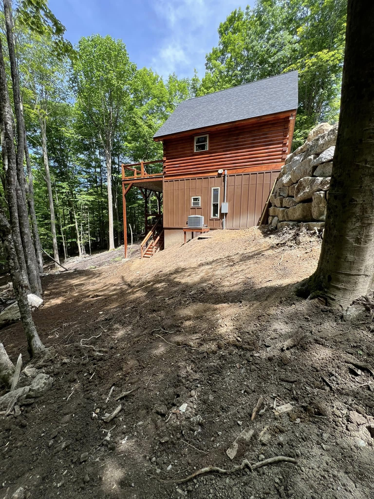

Excavation & Site Prep
Clearing & grubbing, cut & fill, undercut, and subgrade prep. Pads, roadways, and parking graded and compacted to spec.
View serviceExcavation, grading, drainage, and land development across Western North Carolina, from a locally owned, NCDOT pre-qualified contractor led by a licensed commercial General Contractor.
AGLM self-performs the complete site-work scope, the excavation, grading, and drainage that every commercial and development project is built on.
Clearing & grubbing, cut & fill, undercut, and subgrade prep. Pads, roadways, and parking graded and compacted to spec.
View serviceClearing, grubbing, brush and stump removal, and debris haul-off on steep, wooded WNC lots, ready to grade.
View servicePrecision grading for proper elevation, slope, crown, and drainage. Commercial and residential.
View serviceStormwater management, culvert & pipe (HDPE/RCP), catch basins, drop inlets, swales, riprap, and underdrain.
View serviceNew driveways and access roads, base and gravel, culverts, and repair of washed-out mountain drives that hold up.
View serviceExcavation, tank and pump-basin setting, drain fields, connections, and final grade on steep mountain lots.
View serviceBoulder walls and engineered segmental-block walls for grade changes, slope stabilization, and erosion control.
View servicePre-qualified for NC Department of Transportation projects and code-compliant public-sector site work.
View serviceFailing slopes and washed creek banks held with grading, riprap, boulder work, and drainage that stops the next slide.
View serviceAGLM is built for commercial, development, and public work, not just residential jobs. As a NC licensed commercial General Contractor and an NCDOT pre-qualified contractor, we can hold the prime contract or plug in as your dependable site-work subcontractor.
Licensed to hold the prime contract on commercial and public projects, or to plug in as the reliable site-work sub for your GC or development team.
Vetted for North Carolina Department of Transportation projects and ready to support NCDOT primes and municipal offices.
Clearing, excavation, grading, drainage, utility ditching, walls, and erosion control. One accountable crew, fewer subs to chase.
Fully licensed and insured. Bonding capacity and certificate of insurance available on request for qualified bids.
Temporary and permanent measures kept in compliance with environmental requirements, so inspections stay clean and schedules hold.
You deal with the owner and decision-maker, not layers of management or a call center in another state.
NAICS: 238910 Site Preparation · 237310 Highway, Street & Bridge Construction · 237990 Other Heavy & Civil Engineering Construction

NCDOT pre-qualified and led by a NC licensed commercial GC, so we can hold prime contracts, not just sub.
Steep-slope grading, drainage, and erosion control built for Western NC's wet, rocky ground.
Big enough to carry commercial scopes, small enough to move fast, without out-of-region overhead.
Code-compliant, accountable work from a crew that answers to the owner, not a call center.

Set the basin for the septic pump, covered the septic, ran the water and power ditch, and diverted a small spring away from the porch, then final-graded around the house. Full site-work scope, start to finish.
In partnership with a local general contracting firm.
Austin Grading & Land Management holds a 5.0 rating on HomeAdvisor. Ratings and references from past work are available on request.
Based in Burnsville and working within about two hours in any direction. We serve Yancey, Mitchell, Avery, Buncombe, Madison, and Ashe counties plus the surrounding WNC area, including Spruce Pine, Bakersville, Newland, Banner Elk, Asheville, Weaverville, Marshall, and Mars Hill.
Tell us about the scope. We'll get back fast.